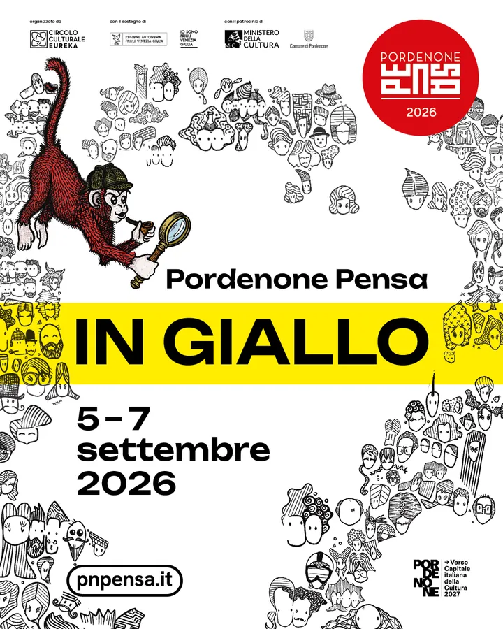

Friuli
da sab 5 set a dom 6 set · dalle 16:45
PordenonePensa in giallo
Incontri gratuiti dedicati a giallo, noir e cronaca, con sei appuntamenti nel weekend.
 Indicazioni
Indicazioni
- Costi e prenotazioni
- Ingresso libero · Senza prenotazione
- Programma
- Programma confermato · piano pioggia. L’incontro di domenica alle 20:30 si svolge al Capitol in caso di maltempo.
- In caso di maltempo
- Per l’incontro domenicale è indicata una sede al coperto in caso di pioggia.
- Note
- Domenica sera: sede Capitol in caso di pioggia.
L’EVENTO
Descrizione completa
Tre giorni dedicati a giallo, noir e cronaca con scrittori, giornalisti ed esperti. Nel fine settimana sono previsti sei incontri tra Biblioteca Civica, Auditorium della Regione e chiostro della biblioteca.
L’incontro serale di domenica si sposta al Capitol in caso di maltempo.
IL PROGRAMMA
Programma e orari
Appuntamenti raccolti dalle fonti elencate. Dove manca un orario, non è ancora disponibile in questa scheda.
Sabato 5 settembre
- 16:45 · Paolo Morganti, “Misteri, delitti e peccati di gola” · Biblioteca Civica
- 18:30 · Lucio Nocentini, “Agatha Christie tra il giallo e il rosa” · Biblioteca Civica
- 20:30 · Biagio Simonetta, “L’invasione. Dal fentanyl ai nuovi oppiacei” · Auditorium della Regione
Domenica 6 settembre
- 16:45 · Luca Crovi, “Andrea Camilleri” · Biblioteca Civica
- 18:30 · Marina Minelli, “Royal family” · Biblioteca Civica
- 20:30 · Gianluigi Nuzzi, “Maranza, violenza minorile e impunità” · Chiostro della Biblioteca
INFORMAZIONI UTILI
Prima di partire
- L’incontro serale di domenica si sposta al Capitol in caso di maltempo.
- Contatti: 339 4299788 · info@circoloeureka.it
ORGANIZZAZIONE